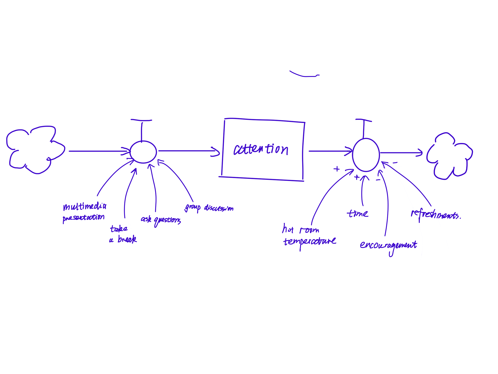
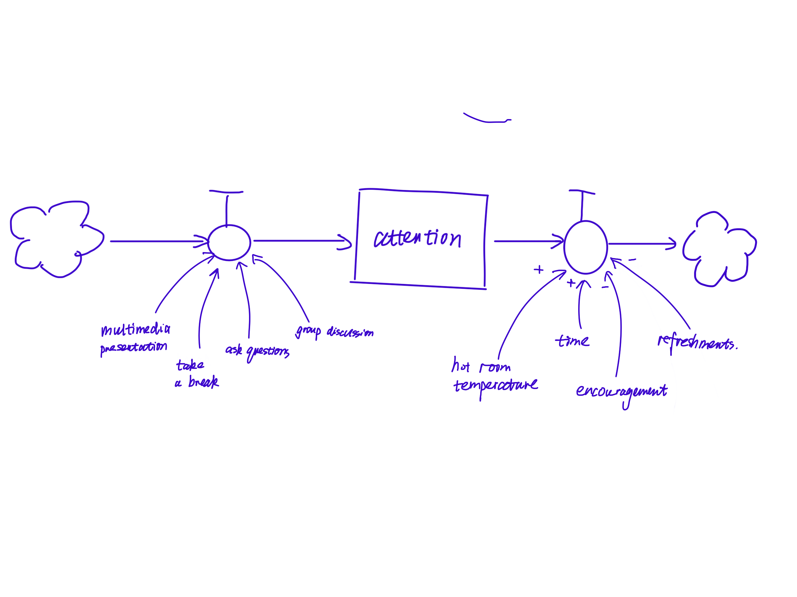

Mengxuan Liu
Table of Contents
1 – Systems
300 Buell South Classroom Setup
A system to achieve efficient and vivid teaching & learning experience.
What is the system?
The equipment, devices, lighting, temperature, Wi-Fi signals, materiality of interfaces, and layout of classroom 300 Buell South provide the learning background for a group of CDP students and professors. The efficient usage and well-planning of the space affect the teaching and learning experience.
Elements in this system include:
-Physical equipment: table, chairs, digital devices, paper, pen, pinup wall, etc.
-Human actors: Students & Professors
-Environmental quality: lighting, temperature, acoustic effect.
Whom does it impact?
The Function of the classroom system is to make efficient use of the space and equipment and provide optimized interior environments. The physical environment will impact the teaching behavior of the professor and the learning experience of the students. The purpose of the system is to create vivid class interaction and maximize the learning experience.
Students’ attention and participation are the stocks in the system. As time goes by, students’ attention drops, and their participation decrease. To arise students’ attention and get them involved, the professor may need to take breaks, switch to different teaching technics, ask questions, assign teamwork, etc.
What are its leverage points?
In this system, there are lots of possible leverage points. Following are examples:
- Removing all the tables in the classroom: Standing position is more flexible than seating position. Class can shift from lecture style to workshop mode, which will enhance the interaction on class.
- Replacing the digital screens with sketch white board: The lack of multi media resource may hurt the attractiveness of the class, but may involve more body movement of the professor.
- The AC unit in the classroom stops working: room temperature increase by time. Hot temperature makes it hard to concentrate on learning and teaching. The stock of the system drops.
 

2 – Authorship
Hybrid Authorship in Creating and Using Technology Tools
There are always latent energy pushing technology to evolve.
Lock-in in technology
Lock-in in technology is a limitation and also an opportunity. Technological innovation and deployment are path dependent and take place under conditions of uncertainty. Technologies coevolve with supporting institutions, business strategies, and user practices, and individuals, firms, and governments are subject to bounded rationality (Foxon, 2013).

Due to the characteristic of independence, technology needs to inherit and adapt to what’s already established in the field. One obvious example is the newly released Apple Vison Pro product, even though it is the most cutting-edge AR/VR device, its functionality is established on top of the applications, programs, sensors, and other technology and technical items already available in the market.

The evolvement of technology over time determines that it is supposed to comply with diverse users, stakeholders, managers, etc. Lock-in makes sure that the feedback and information transforming between different groups is smooth and standardized. Take the NYC Open Data system for example, there are plenty of data contributors who publish valuable data through the system. Researchers, policymakers, students, etc, are the majority of the people who benefit from those resources. The standardization and management of those data in certain formate under a stable framework are the cornerstones of storing, applying, transforming, and analyzing the data.
Authorship in AI-generated work
The hybrid access and creative usage of AI or any technology tool make the authorship in them much more sophisticated than the traditional way of media, like books, newspapers, journals, etc. Considering the components of a technology tool, there are at least three major groups involved in the authorship:
- The program developer: who comes up with the concept and lays out the framework.
- The user: who works with the framework based on individual demands and creativity.
- The data contributor: who is latent and massive, feeding the program with real evidence and materials.
For instance, there are tons of website building and hosting tools in the market. They provide customizable website templates, components, etc to the users. The users edit text and upload images, videos, and audio to the website based on their project needs and their personal preference. And last, how do the tool developers create the tool? They might do some data collection and research on what style or components are most popular in web builders.
Understanding Authorship
The following digital zine is created with the co-authorship with AI tools.
3 – Politics
Rethinking "Classroom" Design in the Context of Hybrid Learning
How to build learning community and adapt thechonology to enhance learning experience with the consideration of individual-group balance

Environment design affects learning-teaching experience
Well-designed classrooms can significantly enhance learning experiences by increasing attention span, improving intellectual efficiency, and restoring mental energy. However, with the shift from the traditional in-person classroom to hybrid learning, redefining the concept of a "classroom" and optimizing individual and group learning patterns have become major challenges.
Sociological and environmental behavioral research has demonstrated the impact of built environments on various behaviors, such as territoriality, crowding, situational, and personal space. More recently, researchers have explored how the learning environment affects students. Consensus reveals that learning spaces exert physical, social, and psychological effects. A post-occupancy study conducted by the Steelcase Education Research Program investigated how different classroom designs influence student success and found that active learning classrooms positively impact student engagement.

"Sociological and environmental behavioral research has demonstrated the impact of built environments on various behaviors, such as territoriality, crowding, situational, and personal space."
Hybrid learning and Techonology tools is curating the learning process
In November 2021, McKinsey surveyed 600 faculty members and 800 students from public and private nonprofit colleges and universities in the United States, including minority-serving institutions, to assess the use and impact of various classroom learning technologies. The survey identified eight dimensions crucial for engaging effectively with students in higher education:
-Clear education roadmap;
-Seamless connections;
-Wide range of learning formats;
-Captivating experiences;
-Adaptive learning;
-Real-world skills application;
-Timely support;
-Strong community.

The pandemic accelerated the need for new and innovative online learning experiences, prompting institutions to reconsider their teaching approaches and focus on synchronous and hybrid learning. While the adoption of these eight dimensions varies among different institutions, they all contribute to building a strong learning community.

Moreover, students in higher education show enthusiasm for tools that make learning more entertaining and efficient, while faculty members embrace these new tools but require additional technical support and training.

4 – Governance
Design Fiction - HarmonyLink: Emotional Landscapes, Environmental Change
Klee, Mengxuan, Dan
In the future we will need to grapple with environmental forces beyond ourselves, that are beyond the scale of the individual. How can we support each other through the dislocation, anxiety, uncertainty, isolation, and challenge of experiencing climate change?
We are inventing a device that will help people relate to each other in the future. Specifically around moments where it will be hard to process the large, overwhelming, and complex manifestations of a changing environment.
The device is informed by therapeutic modalities – we have designed it so that it can communicate and support the person wearing it, and help them connect with other people around them, in community with them, at work with them, in a lot of different settings.

The device will be small, wearable, and can communicate through visual, sensory, and textual or spoken signals to the users with minimal input. It’s a support system that draws on concepts from family systems theory, somatic therapy, and group therapy, helping people connect and grapple with forces much greater than the individual, or self. There is a spiritual, yet non denominational, component to the device, in the sense that it helps people approach unanswerable questions about forces and systems that are sometimes frightening, chaotic and uncertain, and that operate at a global, planetary scale.
One example of when we think the device would be useful:
Earlier this summer the skies over New York City were orange, thick with wildfire smoke from forests burning in Quebec, Canada. It was surreal, and scary, and hard to grapple with. Many millions of people experienced it. People are affected differently by this kind of event – and it’s the kind of event that is only going to become more frequent in the future. Could a device that promotes group therapy concepts and connection to others experiencing the same event help? And combat isolation? And from new connections and ways of knowing, experiencing, and addressing emotions like fear, isolation, or uncertainty?

HarmonyLink. A device that works to:
- Combat Isolation:When faced with unusual and frightening events, people might feel isolated and overwhelmed. The device can identify nearby users who are going through the same experience and facilitate impromptu support groups or virtual connections. Knowing that others share similar emotions and challenges can provide comfort and a sense of solidarity.
- Share Understanding:Surreal climate-related events can be challenging to process and understand. The device can provide real-time information and educational resources to help users comprehend the underlying causes of such events, making them feel more informed and empowered.
- Introduce Coping Mechanisms:Different people cope with extreme events differently. The device can offer a range of coping strategies, such as mindfulness exercises, breathing techniques, or guided meditations, to help individuals navigate the emotional turmoil and uncertainty.
- Engender Collective Empowerment:By connecting people who experience similar events, the device can foster a collective sense of empowerment. Users can share ideas, initiatives, and actions to address climate change collectively, strengthening their efforts to make a positive impact.
- Coordinate Climate Action:The device can also act as a platform for organizing climate-related actions and responses. For example, it could alert users to local community events, clean-up efforts, or climate advocacy initiatives, encouraging active participation and collaboration.


Supporting people through events like:
- Extreme Weather Events:In regions prone to severe hurricanes, tornadoes, or floods, the device can facilitate communication and support among affected individuals during and after such events.
- Coastal Erosion and Sea-Level Rise:Communities facing coastal erosion and sea-level rise can use the device to connect, share experiences, and discuss adaptive strategies for resilience.
- Biodiversity Loss and Wildlife Encounters:The device can facilitate connections among people who witness the loss of biodiversity or experience encounters with displaced wildlife due to climate change impacts.
- Water Scarcity and Drought:In regions experiencing water scarcity and drought, the device can provide information on water-saving practices and encourage community water-sharing initiatives.
The device's ability to promote group therapy concepts, facilitate connections, and provide emotional support can help people process the emotional and psychological impacts of surreal climate change-related events together. By fostering a sense of community and shared purpose, the device can empower individuals to address climate change challenges proactively and collaboratively.
Staging a HarmonyLink User Story:
Title: "HarmonyLink: Through the Orange Skies"
INT. NEW YORK CITY ROOFTOP - DAY
The sky is thick with wildfire smoke, casting an eerie orange glow over the city. Three individuals, DAN, MENGXUAN, and KLEE, stand on the rooftop, each wearing one of the "HarmonyLink" devices.
DAN's Device (in a soothing voice): (Text on screen: "DAN") Take a moment to center yourself amidst this surreal landscape.
MENGXUAN's Device (in an empathetic tone): (Text on screen: "MENGXUAN") It's okay to feel overwhelmed. We're here with you.
KLEE's Device (in a reassuring voice): (Text on screen: "KLEE") Together, we can find strength in this shared experience.
The three devices activate, searching for nearby users who are also experiencing the orange skies.
CUT TO:
INT. NEW YORK CITY STREETS - DAY
The devices vibrate gently, indicating a connection between DAN, MENGXUAN, and KLEE. They look at each other, acknowledging the shared connection.
MENGXUAN's Device: (Text on screen: "MENGXUAN") We are not alone. Let's find solace in each other's presence.
CUT TO:
INT. COFFEE SHOP - DAY
DAN, MENGXUAN, and KLEE sit around a table, sipping coffee. The devices emit soft, calming lights.
DAN's Device: (Text on screen: "DAN") This phenomenon can be overwhelming. Let's acknowledge our feelings.
MENGXUAN's Device: (Text on screen: "MENGXUAN") I feel a mix of awe and anxiety. It's surreal.
KLEE's Device: (Text on screen: "KLEE") I'm concerned about the implications of such events becoming more frequent.
The three users engage in a silent moment of reflection, understanding each other without words.
CUT TO:
EXT. CITY PARK - DAY
The devices suggest a walk in the park, surrounded by nature.
DAN's Device: (Text on screen: "DAN") Let's find grounding in the beauty of nature around us.
They walk amidst the trees, taking in the surroundings, and the devices deliver a poetic message.
MENGXUAN's Device: (Text on screen: "MENGXUAN") The orange skies blend with the lush green, creating a canvas of resilience.
As they walk, the beauty of nature intertwines with the surreal orange skies, offering a sense of serenity.
CUT TO:
INT. COMMUNITY CENTER - DAY
The three users attend a gathering of "HarmonyLink" users, exchanging their experiences and emotions.
KLEE's Device: (Text on screen: "KLEE") Our collective experience is a catalyst for meaningful change. Share your thoughts.
They discuss initiatives for climate action and resilience, inspired by their shared experience.
CUT TO:
INT. NEW YORK CITY ROOFTOP - DAY
Back on the rooftop, the orange skies begin to clear as the wildfire smoke dissipates.
DAN's Device: (Text on screen: "DAN") Our connection remains, even as the skies change.
MENGXUAN's Device: (Text on screen: "MENGXUAN") Together, we can face the uncertain future.
KLEE's Device: (Text on screen: "KLEE") Let's keep supporting each other, no matter what comes.
The devices emit a soft chime, symbolizing their unwavering bond.
CUT TO:
EXT. CITYSCAPE - DAY
The camera zooms out, showing the city returning to its usual state. The devices continue to connect people as they navigate the challenges of climate change.
FADE OUT.
5 – Behavior
$ Lender Money $
Modeling agents of the system.